17 Métodos de escalado multidimensional (MDS)
Hemos visto cómo el análisis de componentes principales (PCA) puede utilizarse en la tarea de reducción de la dimensionalidad: reducir el número de características de un conjunto de datos manteniendo las relaciones esenciales entre los puntos. Aunque es flexible, rápido y fácil de interpretar, no funciona tan bien cuando existen relaciones no lineales entre los datos.
Para subsanar esta deficiencia, podemos recurrir a una clase de métodos conocidos como aprendizaje múltiple, que son una clase de estimadores no supervisados que intentan describir conjuntos de datos como variedades de baja dimensión incrustadas en espacios de alta dimensión.
En concreto estudiaremos el escalado multidimensional (MDS), la incrustación localmente lineal (LLE) y el mapeado isométrico (IsoMap).
17.1 Escalado Multidimensional
El MDS tiene por objetivo representar los puntos que residen en un espacio de gran dimensión a uno de menor dimensión, preservando al máximo las distancias entre esos puntos. De este modo, las distancias o similitudes entre pares de puntos en el espacio de menor dimensión se aproximan mucho a sus distancias reales.
MDS puede ser utilizado como un método de preprocesamiento de datos en problemas de regresión y clasificación. Normalmente, la medida de distancia utilizada en el MDS es la distancia euclídea, aunque al aplicar el MDS puede utilizarse cualquier otra métrica de disimilitud adecuada.
Existen dos tipos principales de MDS: métrico (clásico) y no métrico. Aunque ambos tienen como objetivo encontrar la mejor representación en dimensiones inferiores de los datos en dimensiones superiores, sus diferencias radican en el tipo de datos para los que están diseñados.
El MDS métrico (clásico) también se conoce como análisis de coordenadas principales (PCoA). No hay que confundirlo con el Análisis de Componentes Principales (PCA). El MDS métrico intenta modelar la similitud/disimilitud de los datos calculando las distancias entre cada par de puntos utilizando sus coordenadas geométricas. La clave aquí es la capacidad de medir una distancia utilizando una escala lineal. Por ejemplo, una distancia de 10 unidades se consideraría el doble de lejos que una distancia de 5 unidades.
MDS no métrico: está diseñado para tratar datos ordinales. Por ejemplo, puede haber pedido a sus clientes que valoren sus productos en una escala de 1 a 5, donde 1 es terrible y 5 es asombroso. En este caso, un producto con una puntuación de 2 no es necesariamente el doble de bueno que un producto con una puntuación de 1. Lo que importa es el orden (1 < 2 < 3 < 4 < 5) y no el valor absoluto. Este es el tipo de situación en la que se utilizaría un MDS no métrico.
17.1.1 MDS métrico
En general, la métrica MDS calcula las distancias entre cada par de puntos en el espacio original de alta dimensión y, a continuación, los representa en un espacio de menor dimensión preservando al máximo esas distancias entre puntos. En concreto el algoritmo MDS métrico puede describirse en dos pasos:
- Calculamos todas las distancias entre pares de puntos.
- Con las distancias originales conocidas, el algoritmo intenta resolver el problema de optimización encontrando un conjunto de coordenadas en un espacio de dimensiones inferiores que minimice el valor de Stress dado por:
\[Stress(x_1,...,x_n) = \sqrt{\sum_{i\neq j = 1,...,N} (d_{ij} - ||x_i-x_j||)^2}\]
donde \(x_1,..x_n\) son los puntos de datos en su nuevo conjunto de coordenadas en un espacio de dimensión inferior, \(d_{ij}\) es la distancia original entre dos puntos del espacio el la dimensión original, y \(||x_i-x_j||\) es la distancia entre los dos puntos correspondientes en el espacio de dimensiones reducido.
Se pueden utilizar varios métodos para optimizar la función anterior, como el método de descenso más pronunciado de Kruskal o el método iterativo de mayorización de De Leeuw. Un aspecto importante a tener en cuenta es que los dos métodos antes mencionados son enfoques iterativos, a veces pueden proporcionar resultados diferentes, ya que son sensibles a la posición inicial de partida. Al final, se elige como resultado final la configuración con el valor de Stress más bajo.
17.1.2 MDS no métrico
El MDS no métrico se centra en la ordenación de los datos. En este caso consideramos la matriz \(S\) de similitudes, y \(X\) la matriz de coordenadas de los puntos en el espacio original. Si \(S_{ij} > S_{jk}\) entonces las distancias deben verificar \(d_{ij} < d_{jk}\). Por este motivo, se habla de disimilitudes \((\delta_{ij})\) en lugar de similitudes \((S_{ij})\). En este caso las disimilitudes pueden obtenerse fácilmente a partir de las similitudes mediante una simple transformación, por ejemplo \(\delta_{ij} = c_1-c_2S_{ij}\) para algunas constantes reales \(c_1\) y \(c_2\). Un algoritmo sencillo para obtener una ordenación adecuada consiste en utilizar una regresión monotónica de \(d_{ij}\) sobre \(\delta_{ij}\) que produce disparidades \(\hat{d}_{ij}\) en el mismo orden que \(\delta_{ij}\).
Una solución trivial a este problema es situar todos los puntos en el origen. Para evitarlo, las disparidades \(\hat{d}_{ij}\) se normalizan. Dado que sólo nos preocupamos por el orden relativo, nuestro objetivo debería ser invariable a la simple traslación y escalado; sin embargo, la función de stress utilizada en el MDS métrico es sensible al escalado. Para solucionarlo, el MDS no métrico puede utilizar una tensión normalizada, conocida como stress-1 definida como:
\[\sqrt{\frac{\sum_{i<j} (d_{ij}-\hat{d}_{ij})^2}{\sum_{i<j} d_{ij}^2}}\]
17.1.3 Validación del modelo
Para validar el modelo de escalado multidimensional se suele representar gráficamente el valor de stress versus el número de dimensiones consideradas. Se considera que el número óptimo de dimensiones se alcanza cuando la curva resultante se estabiliza sobre cierto valor de stress. En este caso el grid search puede no resultar útil si especificamos un número de dimensiones muy alto porque el valor de stress tiende a decrecer, y por tanto seleccionaríamos la solución con más dimensiones.
17.2 Ampliaciones del MDS
Los métodos clásicos de reducción de la dimensión (PCA, MDS, Análisis factorial…) son fáciles de implementar, eficientes computacionalmente (ya que suelen ser métodos espectrales, es decir, basados en los valores y vectores propios de cierta matriz) y garantizan encontrar la estructura de nuestros datos si es que estos se encuentran sobre un subespacio lineal.
En PCA nuestros datos se proyectan en una menor dimensión que preserva la varianza; las componentes principales van en la dirección de máxima varianza de nuestros datos. Por otra parte, el escalado multidimensional clásico (métrico) encuentra una configuración de X que preserva las distancias originales entre individuos. Ambos métodos funcionarán bien siempre y cuando nuestros datos se encuentren sobre un subespacio lineal.
Para solucionar estas deficiencias debemos definir un concepto fundamental; la geodésica. En geometría, la línea geodésica se define como la línea de mínima longitud que une dos puntos en una superficie dada, y está contenida en esta superficie. En un espacio euclídeo cualquier línea recta es geodésica. Para entender el comportamiento de la distancia geodésica tomamos como ejemplo de subespacio no lineal “Swiss Roll” (rollo suizo) que representamos en la imagen siguiente:

En esta situación la línea azul punteada es una recta geodésica en el espacio euclídeo y la línea azul continua es una recta geodésica en el subespacio lineal. Los puntos A y B se encuentran muy alejados en el brazo si tomamos la distancia geodésica; \(d′\), en cambio, parecerá que están muy cerca si consideramos una distancia euclídea; \(d″\). Solo la distancia geodésica puede reflejar la bidimensionalidad del Swiss Roll. En este caso, PCA y MDS “verán” únicamente la estructura euclídea, por tanto, nunca podrán encontrar la bidimensionalidad del subespacio considerado.
17.2.1 Isomap
Como acabamos de ver, nos gustaría considerar la distancia geodésica del subespacio y no la distancia euclídea. Pero si solo contamos con una nube de puntos y no conocemos la superficie sobre la que se encuentran los datos, ¿cómo podemos calcularla?
A modo de ejemplo, consideremos una superficie circular sobre la que se encuentran dos observaciones: E y C. Supongamos que queremos llegar del punto C al punto E. La distancia que deberemos recorrer de C a E será la distancia geodésica; d′ ya que recorrer una distancia euclídea; d″ sería hacer trampas porque C no tiene por qué estar en un espacio euclídeo sino en uno no lineal. Pero si solo contamos con las coordenadas en el espacio euclídeo de E y C y desconocemos la superficie sobre la que se encuentran ambos, no podemos calcular d′. Aquí es donde entran en juego los vecinos de E que también se encuentran sobre la superficie no lineal. Una forma de aproximar la distancia geodésica entre E y C es encontrar la observación más cercana a E; r y medir la distancia euclídea entre r y E. Si r está muy cerca de E no hay grandes diferencias entre la distancia euclídea y la distancia geodésica. Una vez calculada \(d(E,r)\) podemos encontrar el amigo más cercano a r y medir su distancia euclídea, así hasta llegar a C. Si sumáramos todas estas distancias euclídeas, tendríamos una aproximación de d′:
\[d′=d(E,r)+d(r,x_i)+...+d(x_j,C)\]
Más formalmente, lo que vamos a querer hacer es construir un grafo de los k-vecinos más cercanos (aunque en el artículo original también se propone considerar como vecinos las observaciones que se encuentren en un radio fijo \(\epsilon\)) y calcular la distancia entre E y C como la distancia del camino más corto en el grafo para ir de E a C.
De momento, tenemos solo las distancias geodésicas entre las observaciones que son vecinas, para las que no lo son la distancia entre estas es infinito. Pero, podemos calcular la distancia entre dos observaciones que no son vecinas; \(x_i\) y \(x_j\) como la distancia del camino más corto para ir de \(x_i\) a \(x_j\) (imagen siguiente). La línea azul representa la distancia euclídea y la linea roja representa la distancia usando los vecinos.

Los algoritmos que se usan para encontrar este camino más corto entre dos nodos en el grafo son Dijkstra o Floyd. Ambos conocidos son bien conocidos dentro de la teoría de grafos en la búsqueda de caminos más cortos en tres dos localizaciones.
Uno de los primeros enfoques basados en al distancia geodésica es el algoritmo Isomap, abreviatura de Isometric Mapping. Isomap puede considerarse como una extensión de Multi-dimensional Scaling (MDS) o Kernel PCA. Busca una representación de un espacio multidimensional en otro inferior (generalmente dos dimensiones) que mantenga las distancias geodésicas entre todos los puntos, en lugar de las distancia euclídeas. El algoritmo Isomap se puede representar en los pasos siguientes:
- Fijar k (el número de vecinos más cercanos), p (número de dimensiones a obtener en MDS), y considerar la matriz de datos X, de dimensiones d×m.
- Búsqueda de los k vecinos más próximos para cada punto del banco de datos, y construir el grafo correspondiente utilizando las distancias geodésicas.
- Calcular la matriz de distancias más cortas usando los algoritmos de Floyd o Dijkstra.
- Aplicar MDS a a la matriz de distancias obtenidas en el paso anterior para reducir la dimensión manteniendo las distancias geodésicas.
17.2.2 Linear Local Embedding (LLE)
El algoritmo LLE busca una proyección de los datos en una dimensión inferior que preserve las distancias dentro de los vecindarios locales. Puede considerarse como una serie de análisis de componentes principales locales que se comparan globalmente para encontrar la mejor representación no lineal. El algoritmo LLE trata de reducir un problema de n dimensiones a la vez que intenta preservar las características geométricas de la estructura original de características no lineales.
LLE encuentra primero los k vecinos más cercanos de los puntos. A continuación, aproxima cada vector de datos como una combinación lineal ponderada de sus k vecinos más cercanos. Por último, calcula los pesos que mejor reconstruyen los vectores a partir de sus vecinos y, posteriormente, produce los vectores de baja dimensión mejor reconstruidos por estos pesos. El algoritmo se puede describir de la forma siguiente:
- Encontrar los K vecinos más próximos. Una de las ventajas del algoritmo LLE es que sólo hay que ajustar un parámetro: el valor de K, es decir, el número de vecinos más próximos que se consideran parte de un conglomerado. Si K se elige demasiado pequeño o demasiado grande, no podrá acomodarse a la geometría de los datos originales. Aquí, para cada punto de datos que tenemos, calculamos los K vecinos más próximos.
- Hacemos una agregación ponderada de los vecinos de cada punto para construir un nuevo punto. Intentamos minimizar la función de coste, donde \(X_j\) es el vecino más cercano para el punto \(X_i\)
\[E(W) = \sum_i |X_i - \sum_j W_{ij}X_j|^2, \text{ con } \sum_j W_{ij} = 1\]
- Ahora definimos el nuevo espacio vectorial \(Y\) tal que minimizamos el coste para \(Y\) como los nuevos puntos
\[C(Y) = \sum_i |Y_i - \sum_j W_{ij}Y_j|^2\]
17.2.3 Diferencias entre ISOMAP y LLE
Para ver las diferencias entre ambos algoritmos tomamos como ejemplo el conjunto de datos siguientes donde podremos ver como obtienen las distancias geodésicas y la elección de vecinos. El conjunto de datos son los conocidos datos en espiral:

Fijando el número de vecinos en 10 el algoritmo Isomap proporciona las siguientes relaciones de vecindad:
 En este caso las distancias euclidianas nos dan vecinos más cercanos que no necesariamente proporcionan los vecinos más cercanos a lo largo de figura, ya que se establecen conexiones entre diferentes niveles de la espiral.
En este caso las distancias euclidianas nos dan vecinos más cercanos que no necesariamente proporcionan los vecinos más cercanos a lo largo de figura, ya que se establecen conexiones entre diferentes niveles de la espiral.
Veamos que ocurre con el algoritmo LLE cuando tomamos tres vecinos:
 Al reducir el número de vecinos las conexiones establecidas se restringen más al comportamiento de la espiral pero siguen existiendo conexiones entre diferentes niveles.
Al reducir el número de vecinos las conexiones establecidas se restringen más al comportamiento de la espiral pero siguen existiendo conexiones entre diferentes niveles.
En los puntos siguientes veremos las funciones y librearías de R que nos permiten realizar el escaldo multidimensional en sus diferentes versiones, y lo aplicaremos en diferentes ejemplos.
17.3 MDS en R
La librería mlr3 no dispone de funciones específicas para llevar a cabo el escalamiento multidimensional por lo que recurrimos directamente a las funciones y librerías existentes para su presentación.
Las funciones para llevar a cabo los diferentes tipos de escalamiento multidimensional presentado son:
cmdscalede la libreríastatspara llevar a cabo el escalamiento multidimensional métrico. Los parámetros más relevantes de esta función sond, que contiene la matriz de distancias entre las muestras obtenida mediante la funcióndist,kque identifica el número máximo de dimensiones que deseamos representar,eigque indica si se deben devolver los valores propios como resultado de la función.isoMDSde la libreríastatspara llevar a cabo el escalamiento multidimensional no métrico. Los parámetros más relevantes de esta función sond, que contiene la matriz de distancias entre las muestras obtenida mediante la funcióndist, ykque identifica el número máximo de dimensiones que deseamos representar. También podemos fijar la tolerancia del proceso de convergencia mediante el parámetrotol.Isomapde la libreríaRDRToolboxpara llevar a cabo el escalamiento Isomap. Los parámetros más relevantes de esta función sondata, que contiene la matriz de datos,dimsque identifica el número máximo de dimensiones que deseamos representar, ykque identifica el número de vecinos que vamos a utilizar en el proceso de construcción.LLEde la libreríaRDRToolboxpara llevar a cabo el escalamiento Isomap. Los parámetros más relevantes de esta función sondata, que contiene la matriz de datos,dimque identifica el número máximo de dimensiones que deseamos representar, ykque identifica el número de vecinos que vamos a utilizar en el proceso de construcción.
Para utilizar estas dos últimas funciones hay que instalar la librería correspondiente mediante el código siguiente:
Cargamos el resto de librerías necesarias.
# Paquetes anteriores
library(tidyverse)
library(sjPlot)
library(knitr) # para formatos de tablas
library(skimr)
library(DataExplorer)
library(GGally)
library(gridExtra)
library(ggpubr)
library(cvms)
library(kknn)
library(rpart.plot)
library(rda)
library(klaR)
library(ggord)
theme_set(theme_sjplot2())
# Paquetes AA
library(mlr3verse)
library(mlr3tuning)
library(mlr3tuningspaces)
library(gbm)
library(RWeka)
library(xgboost)
library(lightgbm)
library(FactoMineR)
library(factoextra)
library(rsvd)
library(kernlab)
library(fastICA)
library(RDRToolbox)17.3.1 Bancos de datos
Para ejemplificar el uso de los modelos de escalamiento multidimensional vamos a utilizar tres bancos de datos: Gene expression leukemia, Vehicle silhouettes, y Sales. A continuación presentamos los tres bancos de datos.
17.3.1.1 Gene expression leukemia
Este banco de datos lo hemos descrito en temas anteriores. Cargamos los datos y generamos un vector con la variable que identifica el tipo de leucemia.
# Leemos los datos
geneexpleu = read_rds("geneexpressionleukemia.rds")
# Eliminamos el indicador de la muestra
geneexpleu = geneexpleu %>% dplyr::select(-samples)
# Consideramos matriz de características y tipos
X_genes = geneexpleu %>% dplyr::select(-type)
y_genes = geneexpleu[,"type"]
# Debemos cambiar los nombres pq no se respeta la convención de R ya que todas ellas empiezan por un número
names(X_genes) = str_replace_all(names(X_genes),"[/_-]","")
names(X_genes) = paste("V", names(X_genes), sep="_")17.3.1.2 Vehicle silhouettes
Este conjunto de datos recoge información de cuatro tipos diferentes de vehículos, utilizando un conjunto de características extraídas de su silueta. Para el experimento se utilizaron cuatro vehículos modelo “Corgie”: un bus de dos pisos, una camioneta Cheverolet, un Saab 9000 y un Opel Manta 400. El objetivo del estudio es clasificar una silueta dada como uno de cuatro tipos diferentes de vehículos. Todos los atributos son numéricos discretos salvo la última variable que registra el tipo de vehículo. No existen valores perdidos.
17.3.1.3 Sales
Contiene las cantidades compradas semanalmente de 800 productos a lo largo de 52 semanas. Todos los atributos son numéricos sin valores perdidos y van identificados mediante W(número de la semana). En este caso no tenemos posible variable target.
17.3.2 Modelos
Para cada banco de datos probamos los diferentes modelos de escalamiento multidimensional y valoramos las soluciones obtenidas.
17.3.2.1 Gene expression leukemia
Comenzamos con el banco de datos de expresiones génicas. Para poder utilizar los algoritmos MDS debemos obtener en primer lugar la matriz de distancias entre muestras para lo que utilizaremos la distancia euclídea.
Comenzamos con los diferentes algoritmos.
MDS métrico
Obtenemos las solución del MDS métrico para dos dimensiones.
Creamos un tibble con las coordenadas y añadimos la columna que identifica el tipo de leucemia para poder representar la solución vinculada con el target original.
# tibble de coordenadas
mds_plot = as.tibble(mds_leukemia$points)
colnames(mds_plot) = c("Dim1", "Dim2")
# añadimos tipo
mds_plot$type = y_genes$type
# Gráfico MDS
ggplot(mds_plot, aes(Dim1, Dim2, color = type)) +
geom_point()La solución MDS parece identificar claramente los grupos PB, Bone_Marrow_CD34, y PBSC_CD34, mientras que parece confundir los grupos AML y Bone_Marrow. Al igual que ocurre con las CP podemos saber el porcentaje de variabilidad explicada por la solución MDS construida con:
El valor es bastante bajo indicando que la solución es algo pobre. Podemos valorar el ajuste comparando las distancias originales frente a las que obtendríamos con la solución MDS. Calculamos ambas distancias y las representamos gráficamente.
# Distancias
original = X_genes %>% dist()
predicha = mds_leukemia$points %>% dist()
df = data.frame(original, predicha)
# Gráfico
ggplot(df, aes(original, predicha)) + geom_point() + geom_abline(intercept = 0, slope = 1)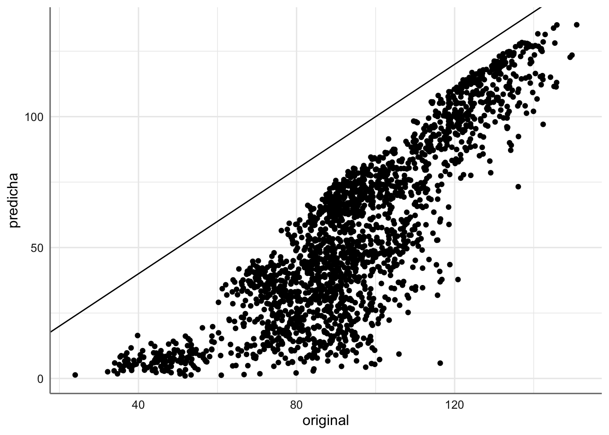
la nube de puntos se alejan de la diagonal, que mostraría un ajuste perfecto, lo que demuestra que la solución no es adecuada. Pasamos el MDS no métrico.
MDS no métrico
initial value 24.485837
final value 24.470167
convergedEl valor de stress final es bastante algo lo que indica que el modelo puede no ser adecuado para este conjunto de datos. Representamos la solución identificando de nuevo por los tipos de leucemia.
# tibble de coordenadas
mds_plot = as.tibble(mdsnm_leukemia$points)
colnames(mds_plot) = c("Dim1", "Dim2")
# añadimos tipo
mds_plot$type = y_genes$type
# Gráfico MDS
ggplot(mds_plot, aes(Dim1, Dim2, color = type)) +
geom_point()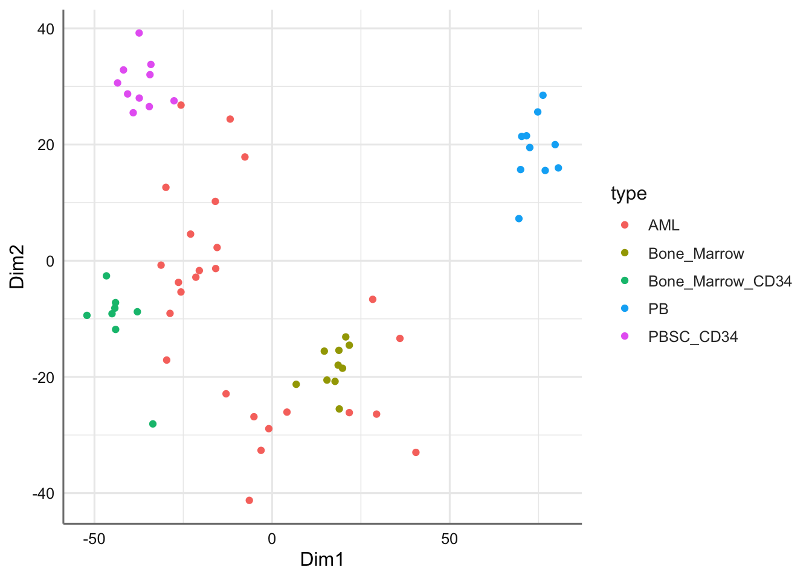
La solución no métrica es prácticamente idéntica a la métrica lo que demuestra que la solución no es muy adecuada. Probamos con los otros algoritmos
Isomap
En estos modelos no hace falta pasar la matriz de distancias ya que podemos utilizar los datos originales. Podemos probar diferentes configuraciones del número de vecinos pero para comenzar seleccionaremos k=5.
Como en los modelos anteriores utilizamos las coordenadas de la solución obtenida para ver el comportamiento de los diferentes tipos de leucemia.
# tibble de coordenadas
mds_plot = as.tibble(isomap_leukemia$dim2)
colnames(mds_plot) = c("Dim1", "Dim2")
# añadimos tipo
mds_plot$type = y_genes$type
# Gráfico MDS
ggplot(mds_plot, aes(Dim1, Dim2, color = type)) +
geom_point()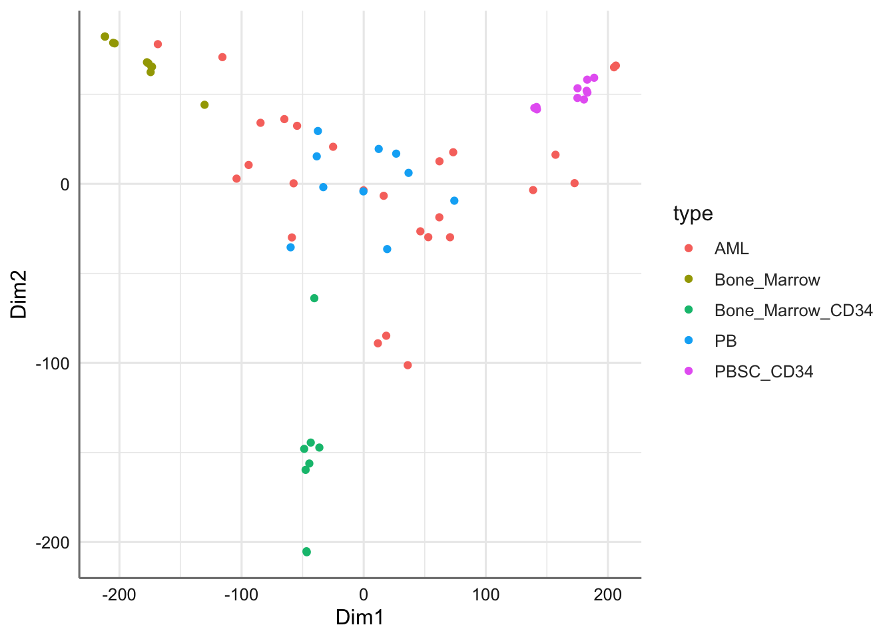
La solución con cinco vecinos del Isomap parece incluso peor que las soluciones MDS obtenidas antes. En este caso solo se identifica claramente el tipo Bone_Marrow_CD34. Veamos que ocurre si reducimos el número de vecinos a 3.
isomap_leukemia = Isomap(as.matrix(X_genes), dims = 1:2, k = 3)
# tibble de coordenadas
mds_plot = as.tibble(isomap_leukemia$dim2)
colnames(mds_plot) = c("Dim1", "Dim2")
# añadimos tipo
mds_plot$type = y_genes$type
# Gráfico MDS
ggplot(mds_plot, aes(Dim1, Dim2, color = type)) +
geom_point()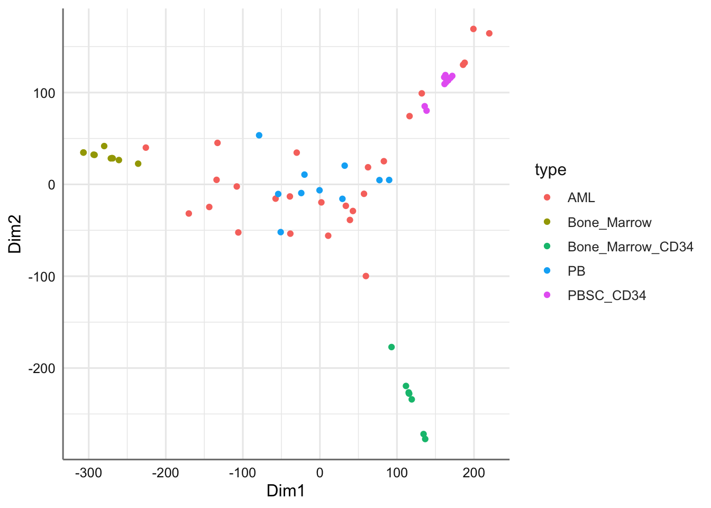
La solución es algo diferente y parecen identificarse dos tipos en lugar de uno solo. Por último probamos una solución con 10 vecinos para ver el efecto que tiene en la solución.
isomap_leukemia = Isomap(as.matrix(X_genes), dims = 1:2, k = 10)
# tibble de coordenadas
mds_plot = as.tibble(isomap_leukemia$dim2)
colnames(mds_plot) = c("Dim1", "Dim2")
# añadimos tipo
mds_plot$type = y_genes$type
# Gráfico MDS
ggplot(mds_plot, aes(Dim1, Dim2, color = type)) +
geom_point()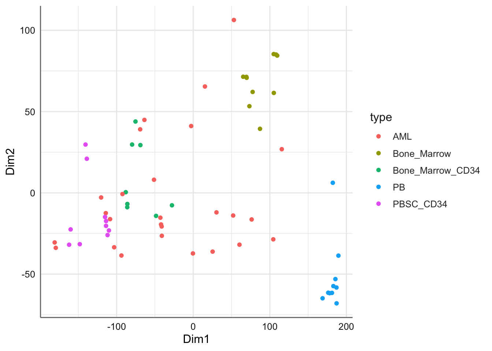
En este caso el único tipo que se identifica aisladamente es PB mientras que el resto está bastante disperso. No parece que ninguna de las soluciones propuestas nos sira para nuestro objetivo final. Veamos que ocurre cuando usamos LLE.
LLE
En este caso comenzamos con 5 vecinos como en el caso de Isomap. Obtenemos las solución y la representamos gráficamente.
lle_leukemia = LLE(as.matrix(X_genes), dim = 2, k = 5)
# tibble de coordenadas
mds_plot = as.tibble(lle_leukemia)
colnames(mds_plot) = c("Dim1", "Dim2")
# añadimos tipo
mds_plot$type = y_genes$type
# Gráfico MDS
ggplot(mds_plot, aes(Dim1, Dim2, color = type)) +
geom_point()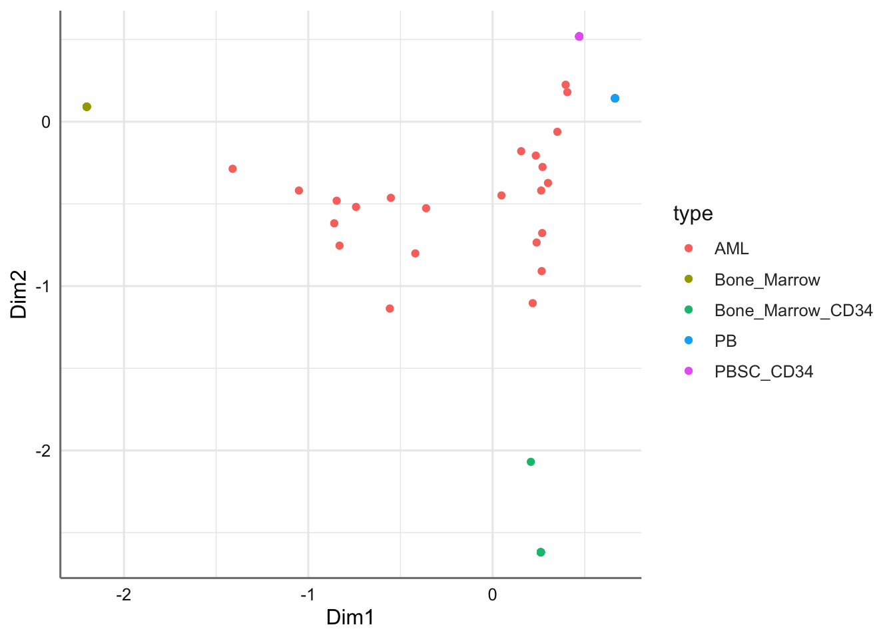
En este caso si se identifican los cinco grupos claramente. De hecho las observaciones de tres de ellos se asignan en el mismo punto. El único tipo que parece disperso es AML, que ya vimos en análisis anteriores que era el más difícil de identificar. Esta solución resulta adecuada si estamos interesado sen diferenciar los tipos de tumor pero parece demasiado restrictiva. Veamos que ocurre si aumentamos el número de vecinos a 10.
lle_leukemia = LLE(as.matrix(X_genes), dim = 2, k = 10)
# tibble de coordenadas
mds_plot = as.tibble(lle_leukemia)
colnames(mds_plot) = c("Dim1", "Dim2")
# añadimos tipo
mds_plot$type = y_genes$type
# Gráfico MDS
ggplot(mds_plot, aes(Dim1, Dim2, color = type)) +
geom_point()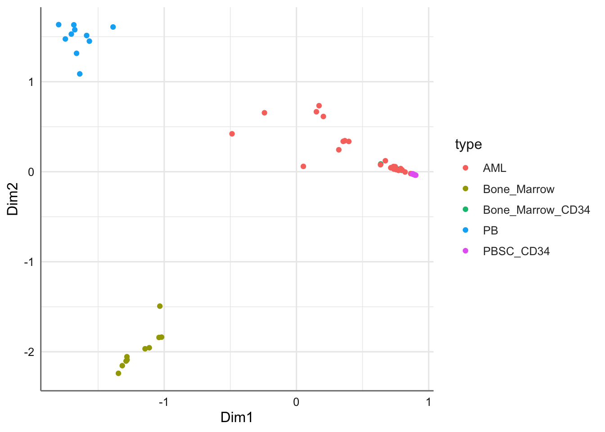
En este caso se diferencian los grupos PB, Bone_Marrow y PBSC_CD34, mientras que los otros dos aparecen muy mezclados. La solución LLE parece que muestra el mejor funcionamiento de todos los algoritmos utilizados para este banco de datos.
17.3.2.2 Vehicle silhouettes
MDS métrico
Obtenemos las solución del MDS métrico para dos dimensiones.
Creamos un tibble con las coordenadas y añadimos la columna que identifica el tipo de leucemia para poder representar la solución vinculada con el target original.
# tibble de coordenadas
mds_plot = as.tibble(mds_vehicle$points)
colnames(mds_plot) = c("Dim1", "Dim2")
# añadimos tipo
mds_plot$vehicle = y_vehicle
# Gráfico MDS
ggplot(mds_plot, aes(Dim1, Dim2, color = vehicle)) +
geom_point()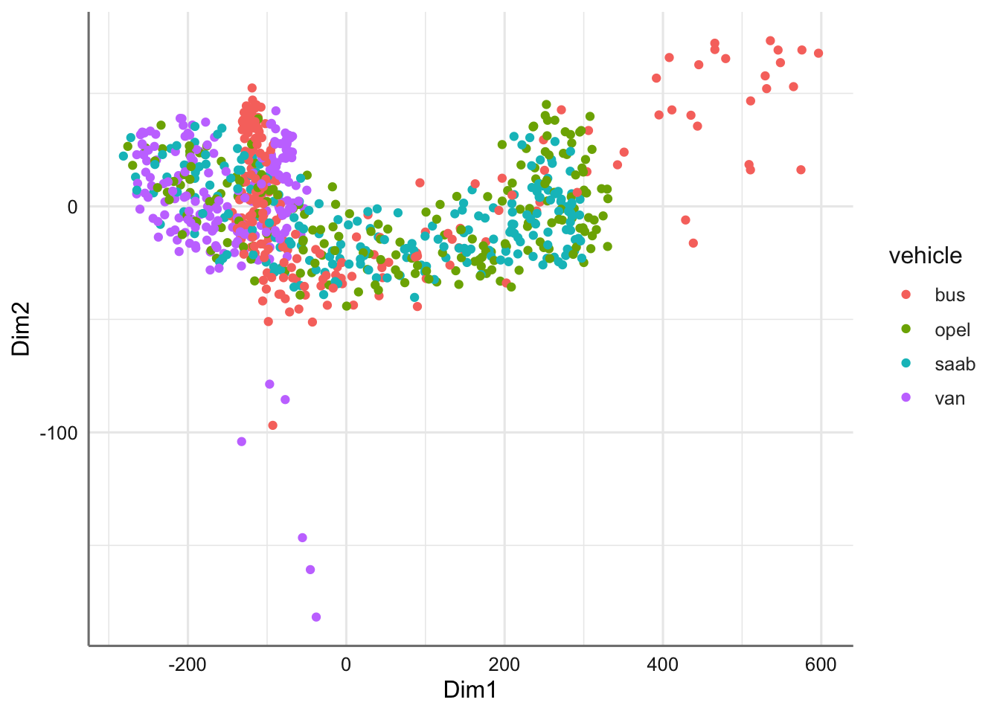
Claramente la solución métrica no permite caracterizar los cuatro grupos de vehículos. Veamos que ocurre con la solución no métrica.
MDS no métrico
initial value 2.813486
final value 2.813402
convergedEl valor de strees es bajo mostrando que la solución podría se adecuada. Veamos la representación gráfica de la solución.
# tibble de coordenadas
mds_plot = as.tibble(mdsnm_vehicle$points)
colnames(mds_plot) = c("Dim1", "Dim2")
# añadimos tipo
mds_plot$type = y_vehicle
# Gráfico MDS
ggplot(mds_plot, aes(Dim1, Dim2, color = type)) +
geom_point()
La solución del modelo no métrico coincide con la del métrico, lo que era de esperar vistos lo valores de stress inicial y final.
Isomap
Veamos la solución Isomap con un número de vecinos k=5.
Como en los modelos anteriores utilizamos las coordenadas de la solución obtenida para ver el comportamiento de los diferentes tipos de leucemia.
# tibble de coordenadas
mds_plot = as.tibble(isomap_vehicle$dim2)
colnames(mds_plot) = c("Dim1", "Dim2")
# añadimos tipo
mds_plot$type = y_vehicle
# Gráfico MDS
ggplot(mds_plot, aes(Dim1, Dim2, color = type)) +
geom_point()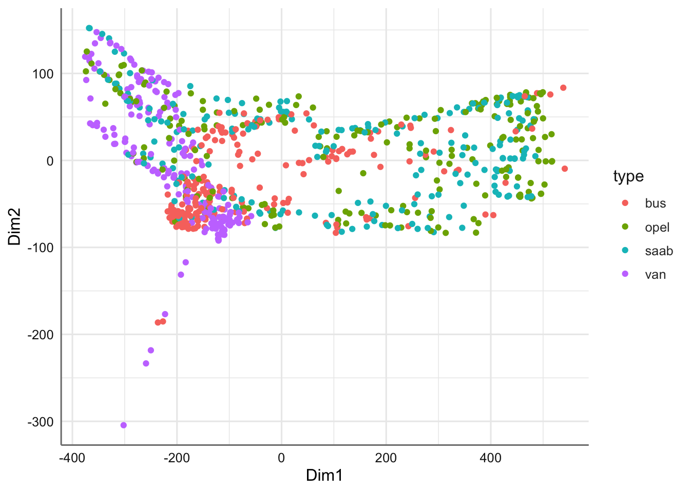
La solución se parece a las dos anteriores pero parece separar algo más los puntos y tiende a concentrar los del mismo tipo. Veamos que ocurre si aumentamos el número de vecinos a 10.
isomap_vehicle = Isomap(as.matrix(X_vehicle), dims = 1:2, k = 10)
# tibble de coordenadas
mds_plot = as.tibble(isomap_vehicle$dim2)
colnames(mds_plot) = c("Dim1", "Dim2")
# añadimos tipo
mds_plot$type = y_vehicle
# Gráfico MDS
ggplot(mds_plot, aes(Dim1, Dim2, color = type)) +
geom_point()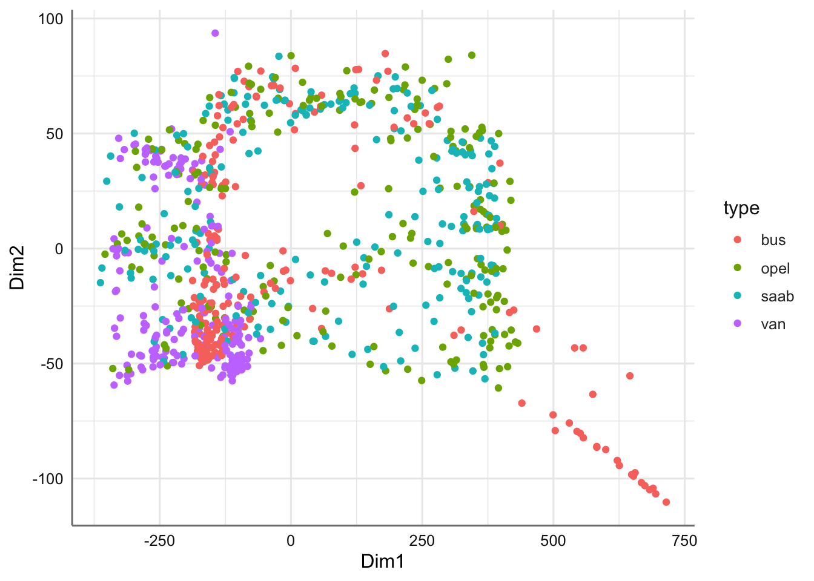
La solución es diferente a las anteriores pero sigue sin cumplir el objetivo que se persigue. Exploramos el algoritmo siguiente.
LLE
En este caso comenzamos con 5 vecinos como en el caso de Isomap. Obtenemos las solución y la representamos gráficamente.
lle_vehicle = LLE(as.matrix(X_vehicle), dim = 2, k = 5)
# tibble de coordenadas
mds_plot = as.tibble(lle_vehicle)
colnames(mds_plot) = c("Dim1", "Dim2")
# añadimos tipo
mds_plot$type = y_vehicle
# Gráfico MDS
ggplot(mds_plot, aes(Dim1, Dim2, color = type)) +
geom_point()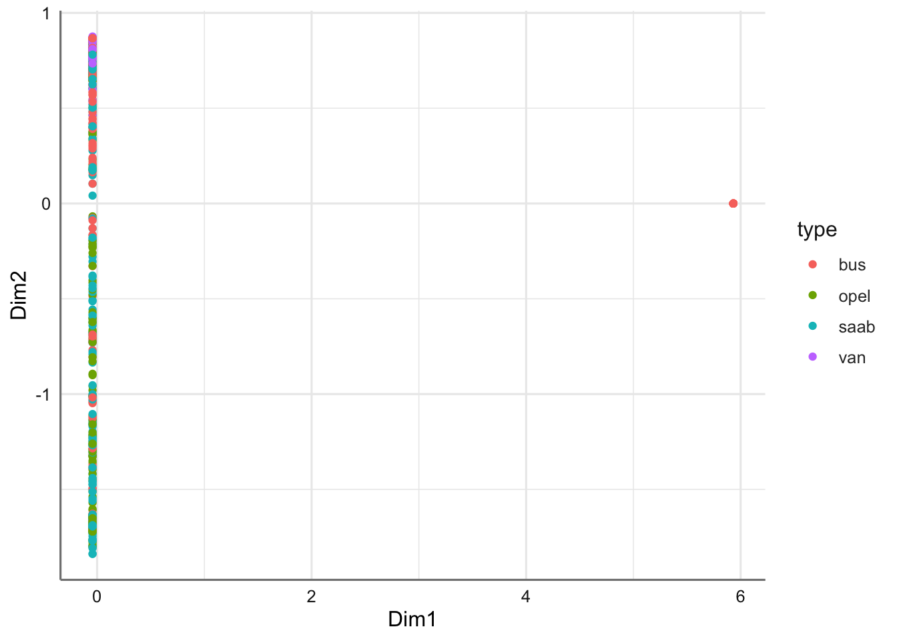
La solución no resulta adecuada y se puede ver como cambiando el número de vecinos no mejoramos lo suficiente. Queda claro que la clasificación buscada resulta muy complicada con los datos recogidos. Esto puede ser debido a que hay una gran confusión en los tipos de vehículo atendiendo a las variables consideradas.
Veamos que ocurre con el último ejemplo.
17.3.2.3 Sales
Analizamos el fichero de ventas donde no tenemos variable target.
MDS métrico
Obtenemos las solución del MDS métrico para dos dimensiones y representamos gráficamente la solución.
mds_sales = X_sales %>%
dist() %>% # Calculamos distancia
cmdscale(k=2, eig = TRUE)
# tibble de coordenadas
mds_plot = as.tibble(mds_sales$points)
colnames(mds_plot) = c("Dim1", "Dim2")
# Gráfico MDS
ggplot(mds_plot, aes(Dim1, Dim2)) +
geom_point()En el gráfico aparecen determinarse tres agrupaciones de puntos sobre los valores de la dimensión 1. Veamos la calidad de la solución representando las distancias originales frente a las predichas por el modelo.
# Distancias
original = X_sales %>% dist()
predicha = mds_sales$points %>% dist()
df = data.frame(original, predicha)
# Gráfico
ggplot(df, aes(original, predicha)) + geom_point() + geom_abline(intercept = 0, slope = 1)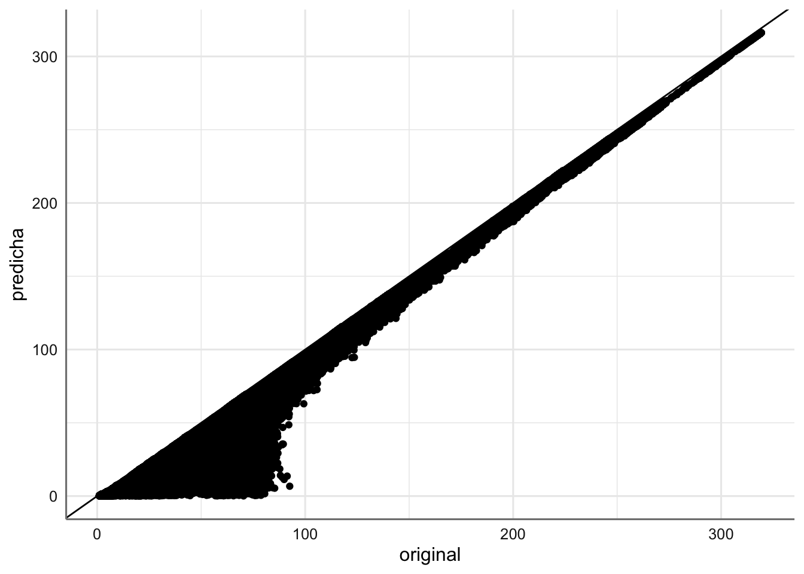
Las distancias obtenidas con el modelo se aproximan bastante bien a las originales salvo en las distancia bajas. Veamos que ocurre con la solución no métrica.
MDS no métrico
initial value 6.265815
final value 6.265459
converged# tibble de coordenadas
mds_plot = as.tibble(mdsnm_sales$points)
colnames(mds_plot) = c("Dim1", "Dim2")
# Gráfico MDS
ggplot(mds_plot, aes(Dim1, Dim2)) +
geom_point()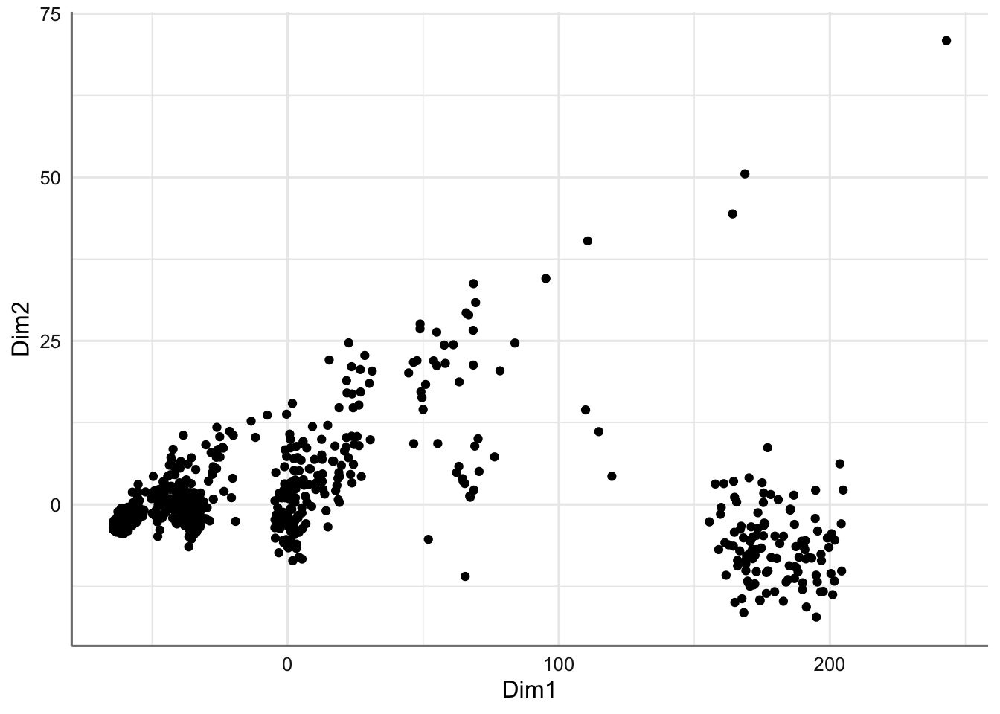
A la vista de los valores de stress la solución métrica y no métrica son muy similares. Pasamos a explorar el resto de soluciones.
Isomap
Veamos la solución Isomap con un número de vecinos k=5.
isomap_sales = Isomap(as.matrix(X_sales), dims = 1:2, k = 5)
# tibble de coordenadas
mds_plot = as.tibble(isomap_sales$dim2)
colnames(mds_plot) = c("Dim1", "Dim2")
# Gráfico MDS
ggplot(mds_plot, aes(Dim1, Dim2)) +
geom_point()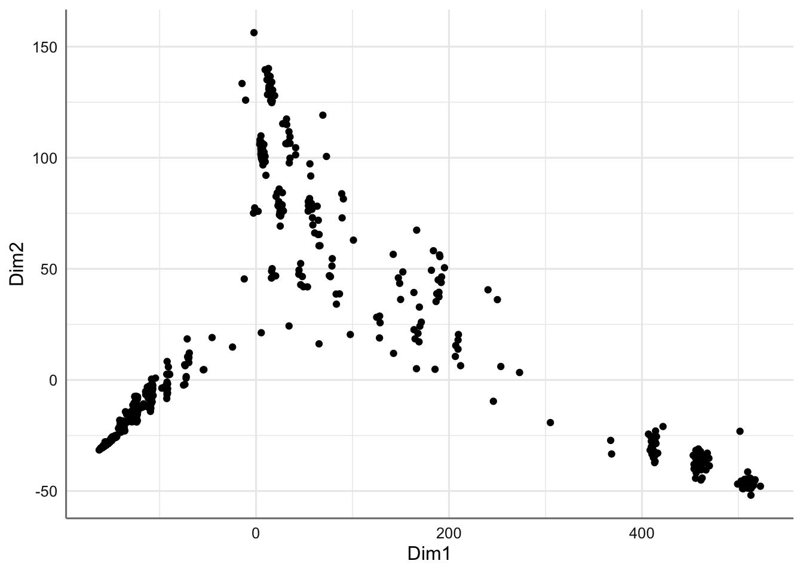
La configuración de la solución es bastante diferente a la de la solución MDS. Veamos que ocurre si variamos el número de vecinos. Cambiamos a 10 vecinos.
isomap_sales = Isomap(as.matrix(X_sales), dims = 1:2, k = 10)
# tibble de coordenadas
mds_plot = as.tibble(isomap_sales$dim2)
colnames(mds_plot) = c("Dim1", "Dim2")
# Gráfico MDS
ggplot(mds_plot, aes(Dim1, Dim2)) +
geom_point()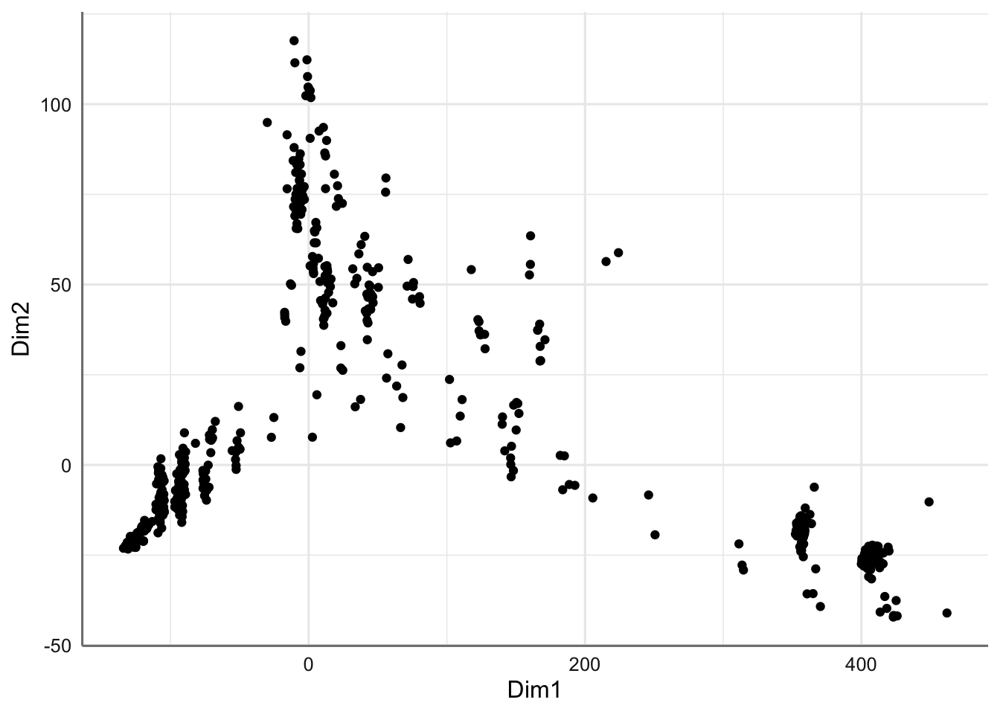
Ampliar el número de vecinos no cambia la configuración de las dos dimensiones. Exploramos la solución LLE.
LLE
En este caso comenzamos con 5 vecinos como en el caso de Isomap. Obtenemos las solución y la representamos gráficamente.
lle_sales = LLE(as.matrix(X_sales), dim = 2, k = 5)
# tibble de coordenadas
mds_plot = as.tibble(lle_sales)
colnames(mds_plot) = c("Dim1", "Dim2")
# Gráfico MDS
ggplot(mds_plot, aes(Dim1, Dim2)) +
geom_point()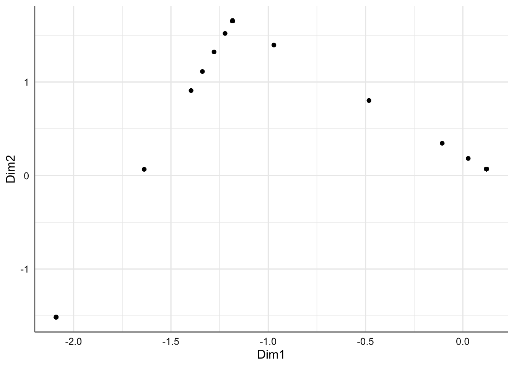
La solución agrupa conjuntos de muestras en una misma posición (por lo que no vemos una nube de puntos completa), lo cual dificulta la interpretación de la solución.
17.4 Ejercicios
- Ajustar un modelo de aprendizaje automático basado en escalas multidimensionales para el banco de datos
Iris4.3.3. - Ajustar un modelo de aprendizaje automático basado en escalas multidimensionales para el banco de datos
Wine quality4.3.8. - Ajustar un modelo de aprendizaje automático basado en escalas multidimensionales para el banco de datos
WGene expression breast cancer4.3.10. - Ajustar un modelo de aprendizaje automático basado en escalas multidimensionales para el banco de datos
QSAR4.2.8. - Ajustar un modelo de aprendizaje automático basado en escalas multidimensionales para el banco de datos
Meat spec4.2.5.